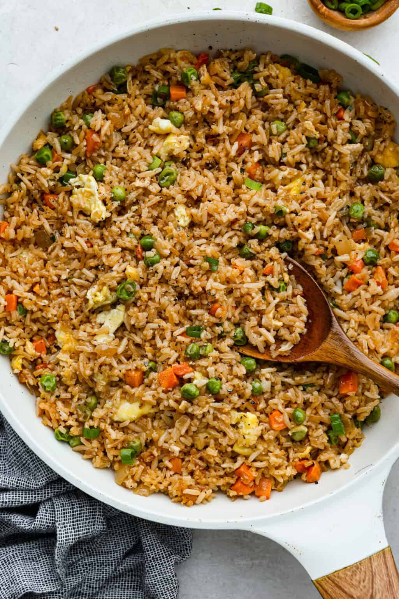

Rice Recipe

Description
This simple meal for everyone and can be easily prepared in home for both the rich and the poor
Ingredients
tomatoes
oil
spices
rice
steps
fry your tomatoes for 10minutes
add yours spies
pour in your rices
add water and cook
homepage